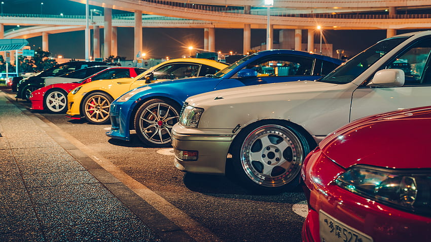
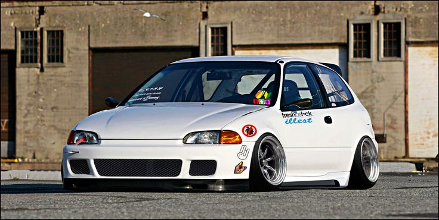

Noches de Neón y Motores: Sumergiéndote en la Cultura JDM de Tokio

El sol se pone tras los rascacielos de Shinjuku y, mientras la mayoría de la ciudad se prepara para descansar, un rugido metálico comienza a despertar en los niveles inferiores de los estacionamientos subterráneos. No es solo ruido; es el latido del JDM (Japanese Domestic Market), una cultura que transformó simples máquinas de transporte en íconos globales de estilo y rendimiento. Si alguna vez has soñado con el olor a caucho quemado y el destello de los neones reflejados en una pintura impecable, abróchate el cinturón. Hoy recorremos las calles de Tokio.
El Corazón del Movimiento: Daikoku PA
No puedes hablar de JDM en Tokio sin mencionar el Daikoku Parking Area. Ubicado en una isla artificial en Yokohama, este no es un estacionamiento común. Es la "Meca". Aquí, las jerarquías desaparecen. Puedes encontrar un Nissan Skyline GT-R R34 con modificaciones de un millón de yenes estacionado junto a un modesto Kei car personalizado con un estilo Bosozoku extremo. La atmósfera es eléctrica: el sonido de los turbos descargando y la estética retro-futurista te hacen sentir dentro de una escena de Initial D.
Las Arterias de la Ciudad: La Wangan y el C1
Para los puristas de la velocidad, la Wangan (Bayshore Route) representa la búsqueda de la perfección técnica. Esta autopista recta y eterna fue el escenario del legendario Mid Night Club, donde solo los autos capaces de superar los 300 km/h tenían permitido rodar. Por otro lado, la C1 Loop es técnica pura. Curvas cerradas entre edificios y túneles iluminados que exigen nervios de acero y una suspensión perfectamente ajustada. Correr aquí no es solo cuestión de potencia, es un baile con la arquitectura de la ciudad.
Estética y Filosofía: Más que solo piezas
Lo que hace especial a la cultura JDM de Tokio es el respeto por el detalle. No se trata solo de "tunear" un auto; se trata de:
- Funcionalidad sobre forma: Cada alerón y cada entrada de aire tiene un propósito.
- Identidad: Desde el estilo Kanjozoku de los Honda Civic en Osaka hasta el VIP Style de los sedanes de lujo en Tokio.
- Comunidad: A pesar de la presión policial y las estrictas leyes de inspección (Shaken), la comunidad se mantiene unida por una pasión inquebrantable.

¿Cómo vivir la experiencia hoy?
Si visitas Tokio y quieres sentir esta energía sin terminar en una persecución de cine, hay paradas obligatorias:
- Akihabara por la noche: Ideal para ver autos con estética Itasha (decorados con anime).
- Super Autobacs: La tienda de accesorios más grande, un parque de diversiones para cualquier "petrolhead".
- Liberty Walk o RAUH-Welt BEGRIFF (RWB): Visitar sus talleres es ver arte automotriz en proceso.
Conclusión
La cultura JDM de Tokio es un testimonio de la ingeniería japonesa y la rebeldía creativa. Es un mundo donde el metal tiene alma y las noches nunca son lo suficientemente largas. Ya sea que prefieras la precisión de un Mazda RX-7 o la fuerza bruta de un Toyota Supra, Tokio siempre tendrá una luz de neón esperando para iluminar tu camino.